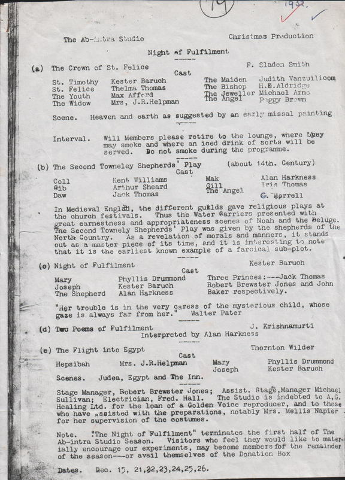

Early Years: Sakuntala, The Ab-Intra StudioPrior to the formation of The Ab-Intra Studio, Alan Harkness worked with the Live Art Society in their 1928 production of Sakuntala, the Indian classic by Kalidasa THE LIVE ART SOCIETY Sakuntala 1928     THE AB-INTRA STUDIO Review: The Robe of Yama   Programs Ab Intra cast list info Reviews 1932 Review - Strindberg, Chekhov, Dante Gabriel Rossetti Review: Jacques Copeau play  Ab Intra - Farewell Performance |